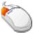
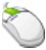
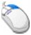

Rendering utilities
|
|
FCheck Mouse controls |
The following table describes the mouse controls used in FCheck:
|
Mouse button |
Description |
|---|---|
|
 |
Hold the left mouse button to scrub through sequence of frames. Drag the mouse while holding the left mouse button to the left to reverse and to the right to advance. |
|
 |
(Windows, Linux) Press the middle mouse button over the playback window to display coordinates of the pixels under the cursor. The coordinates appear in the command-line window. |
|
 |
(Windows, Linux) Pressing the right mouse button actives the dot drawing tool in image plane. Drag the mouse while holding the right mouse button to create a flowing line. (Mac OS X) Pans the image in the playback window. |